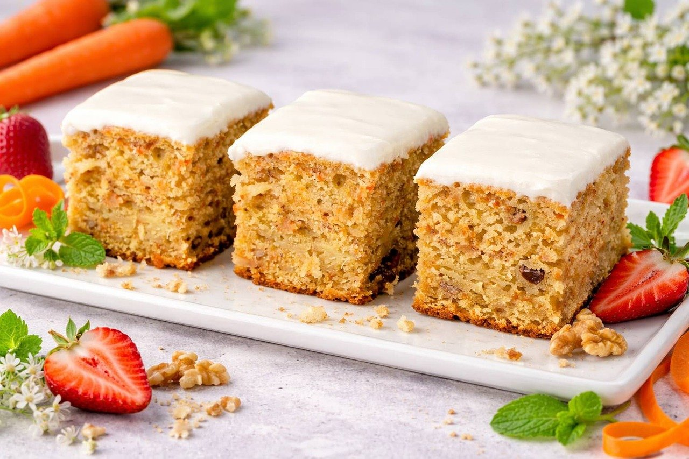

These super moist Carrot Sheet Cake Bars with applesauce, lemon glaze and vegan marzipan carrots are the perfect vegan dessert treats for Easter! The carrot cake recipe is easy to make with simple ingredients and tastes absolutely delicious! It requires no butter, milk or eggs and is therefore 100% dairy-free and vegan!
Start by whisking together all dry ingredients
Bake at 200°C for approx. 40min
Mix Powdered sugar and lemon juice for the icing